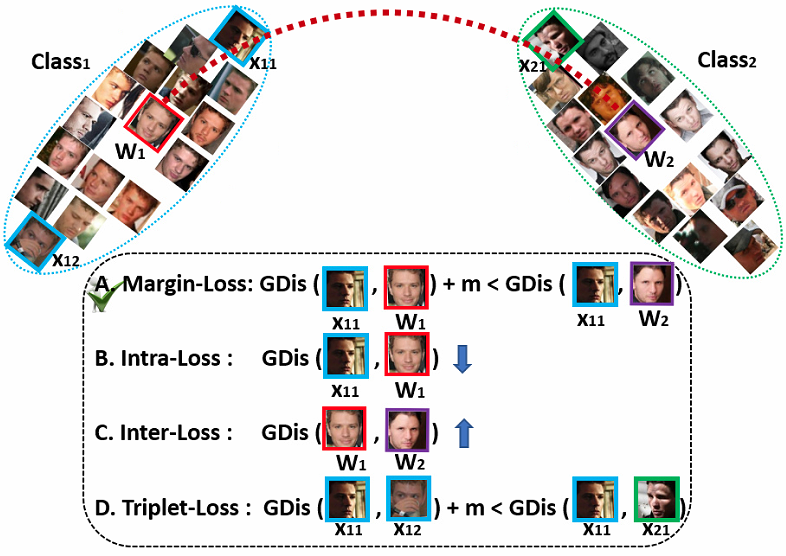

ArcFace
ArcFace is the state of the art face recognition approach which accepted on CVPR 2019.
See the ArcFace project page.

SubCenter-ArcFace
SubCenter-ArcFace is a face recognition approach on large-scale noisy web faces which accepted on ECCV 2020.
See the SubCenter-ArcFace project page.

VPL
VPL(Variational Prototype Learning for Deep Face Recognition) is a face recognition approach which accepted on CVPR 2021.
See the VPL project page.

Partial-FC
Partial-FC is a large-scale training framework for face recognition.
See the Partial-FC project page.